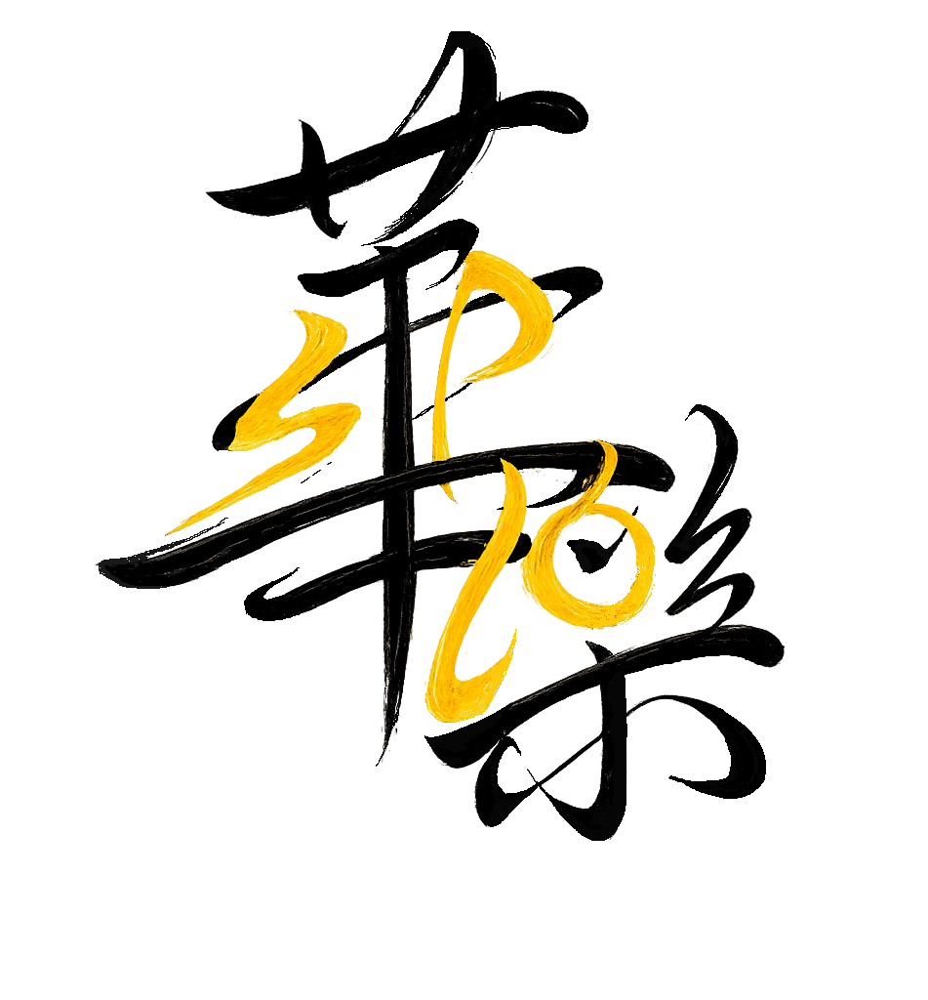

Singapore Polytechnic Chinese Orchestra
关于华乐
The Singapore Polytechnic Chinese Orchestra (SPCO) is a vibrant student-led ensemble dedicated to the art of Chinese orchestral music. Founded with a passion for preserving and promoting Chinese musical heritage, the orchestra brings together students from diverse backgrounds united by their love for traditional and contemporary Chinese music.
From the delicate plucking of the pipa to the soaring melodies of the erhu, our musicians breathe life into centuries-old compositions whilst embracing modern arrangements. We perform at national events, cultural celebrations, and community gatherings across Singapore.
SPCO is more than an orchestra — it is a family, a classroom, and a stage where young musicians discover the beauty of Chinese orchestral traditions.
荣誉成就
Consistently recognised with the Certificate of Distinction at the Singapore Youth Festival Arts Presentation, a testament to our musical excellence.
Invited performers at prestigious events including National Day celebrations, Esplanade showcases, and inter-polytechnic cultural festivals.
Actively bringing Chinese orchestral music to the wider community through charity concerts, school visits, and public engagement programmes.
行政团队
愿景展望
We envision SPCO as a bridge between the rich traditions of Chinese music and the vibrant energy of Singapore's youth. By nurturing young musicians, we ensure that this cultural heritage thrives for generations to come.
Whilst honouring classical compositions, we embrace contemporary arrangements and cross-genre collaborations. Our repertoire evolves with the times, making Chinese orchestral music accessible and exciting for modern audiences.
We strive for artistic excellence not as an end in itself, but as a means to inspire. Every rehearsal, every performance, and every shared moment strengthens the bonds within our orchestra family.
加入我们
Ready to embark on a musical journey? Whether you are a seasoned player or just beginning, there is a place for you in SPCO. Auditions are held at the start of each semester.
Sign upsas2 system in sp.edu.sg